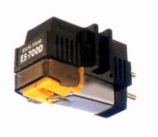

ES-700D

■価格 7,000円■発電方式 MM型■出力電圧 6mV■針圧 ■再生周波数帯域 15-25,000Hz■チャンネルセパレーション ■チャンネルバランス ■コンプライアンス ■負荷抵抗 ■直流抵抗■インピーダンス ■針先 0.6mil ■自重■交換針 ■発売 1992年頃■販売終了 年頃■備考 90年代のエクセルのカタログに、復刻版のES-70S/70Eと共に掲載。ディスコタイプ。
エクセルのインデックスへ